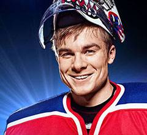
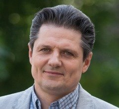

МОЛОДЁЖКА
Сюжет
В хоккейную команду «Медведи» небольшого города приходит новый тренер Сергей Макеев, в прошлом игрок Национальной хоккейной лиги, поставивший себе задачу сделать из «Медведей» единую команду. Это будет непросто, ведь игроки совсем не чувствуют себя единым целым. Помимо этого, у них есть и другие дела: семья, личная жизнь, учёба. Также есть и те, кто пытается как можно быстрее «избавиться» от тренера .
В главных ролях
Игроки хоккейных команд
«Медведи»
Александр Соколовский
Егор (Щука) Андреевич Щукин центральный нападающий (игр. номер 10), капитан «Медведей» (с 1-й по 85-ю серии), брат Дмитрия Щукина, с 85-й по 88-ю серии — игрок хоккейного клуба «Титан» (игр. номер 9), после травмы стал тренировать любительскую хоккейную команду Nivea Men, а со 120-й серии — тренер детской команды «Медведи». Жених Марины Касаткиной. Участвовал в финале шоу «Мастер Dance», выиграл его вместе с Мариной. В 200-й серии в эфире шоу «Мастер Dance» сделал Марине предложение
Макар Запорожский
Дмитрий Андреевич Щукин (1—4 сезоны) вратарь (игр. номер 1) , брат Егора, в 43-й серии из-за гипертрофической кардиомиопатии был вынужден навсегда покинуть хоккей, в 1 сезоне встречался с Викторией, в 46-й серии уехал в Москву учиться в МГТУ им. Баумана. Бывший парень Насти Гордеевой
Иван Жвакин

Александр (Костёр) Станиславович Костров крайний нападающий (игр. номер 9), в 1 сезоне встречался с Яной Самойловой, с 86-й по 124-ю серии — игрок шведского хоккейного клуба «Ферьестад», со 116-й по 120-ю серии — игрок сборной Швеции, со 125-й серии — игрок хоккейной команды «Медведи», со 126-й серии — капитан хоккейной команды «Медведи», со 159-й серии — игрок молодёжной сборной России по хоккею, со 173-й серии — игрок хоккейной команды «Бурые медведи», со 174-й по 181-ю и со 192-й серии — капитан «Бурых медведей». Парень Киры Пановой
Иван Дубровский
Вадим (Назар) Юрьевич Назаров (1—3 сезоны) крайний нападающий (игр. номер 16), с 73-й серии — игрок хоккейного клуба «Арсенал» (игр. номер 11), с 86-й серии — игрок хоккейного клуба «Титан» (игр. номер 16), со 115-й по 120-ю серии — игрок сборной России, встречается с Екатериной Бояринцевой
Иван Мулин
Антон Владимирович Антипов крайний нападающий (игр. номер 17), со 115-й по 120-ю и со 159-й серии — игрок сборной России, со 123-й серии — игрок хоккейного клуба «Ледяные короли», со 159-й серии — игрок молодёжной сборной России по хоккею, со 197-й серии — игрок хоккейной команды «Армата». Муж Ольги Антиповой (Беловой), отец Антонины. Сын Юлии Макеевой и приёмный сын Сергея Макеева. Сводный брат Паши и родной брат Матвея
Влад Канопка
Андрей (Кислый) Викторович Кисляк крайний нападающий (игр. номер 24), с 86-й серии — капитан команды «Медведи», центральный нападающий, со 115-й по 120-ю серии — капитан сборной России, со 125-й по 129-ю серии — игрок хоккейной команды «Ледяные короли», со 176-й серии — игрок хоккейной команды «Бурые медведи». Бывший муж Яны Самойловой, с которой они потеряли ребёнка. Бывший парень Полины Григорьевой. В 194-й серии вернулся к Яне Самойловой
Игорь Огурцов
Семён (Сеня) Николаевич Бакин вратарь (игр. номер 38), со 115-й по 120-ю и со 159-й серии — вратарь молодёжной сборной России по хоккею, со 173-й серии — вратарь хоккейной команды «Бурые медведи». Муж Риты Бакиной (Новиковой), отец Коли
Илья Коробко
Михаил Васильевич Пономарёв защитник (игр. номер 95), с 86-й серии — игрок хоккейного клуба «Титан», со 115-й по 120-ю серии — игрок сборной России, со 120-й серии — игрок хоккейного клуба «Ак Барс», со 146-й серии — игрок хоккейного клуба «Ледяные короли», со 159-й серии — игрок молодёжной сборной России по хоккею, со 173-й серии — игрок хоккейной команды «Бурые медведи». Муж Алины Пономарёвой (Морозовой)
Михаил Конов
Петровский (1 сезон) блатной игрок команды, покинул команду во 2-й серии по решению Сергея Петровича Макеева
Антон Мишин
Артём Воробьёв (2 сезон) с 46-й по 80-ю серии — вратарь (игр. номер 20)
Матвей Зубалевич
Алексей (Смирный) Петрович Смирнов (2—4 сезоны) с 53-й по 60-ю и с 62-й по 69-ю серии — защитник (игр. номер 13), с 69-й серии — игрок хоккейного клуба «Титан», с 86-й серии по 134-ю — игрок хоккейного клуба «Арсенал», со 115-й по 120-ю серии — игрок сборной России, со 134-й по 152-ю серии — игрок хоккейной команды «Ледяные короли»
Николай Алексеев
Игорь Гаврилов (1—2 сезоны) игрок хоккейного клуба «Химик», с 71-й по 80-ю серии — нападающий команды «Медведи» (игр. номер 29)
Михаил Гаврилов
Евгений (Царь) Андреевич Царёв (3—4 сезоны) центральный нападающий (игр. номер 45), бывший нападающий хоккейного клуба «Факел», с 85-й по 123-ю серию — игрок хоккейного клуба «Титан», с 81-й по 85-ю и со 123-й серии — игрок команды «Медведи», со 159-й серии — игрок молодёжной сборной России по хоккею, со 173-й серии — игрок хоккейной команды города Уфа. Жених Елизаветы Красновой, Ждут с Елизаветой ребёнка
Павел Сидоренко
Игорь Горбенко (с 81-й серии) вратарь
Никита Еленев
Денис Васильев (3—4 сезоны) крайний нападающий (игр. номер 8), со 115-й по 120-ю серии — игрок сборной России, со 125-й по 133-ю серии — игрок хоккейной команды «Ледяные короли». Парень Ани Бартович
Пётр Коврижных
Илья (Берёза) Березин (4 сезон) нападающий (игр. номер 47), бывший игрок хоккейного клуба «Факел», со 125-й серии — игрок хоккейной команды «Медведи», со 159-й по 165-ю серии — игрок молодёжной сборной России по хоккею (игр. номер 8), со 173-й серии — игрок хоккейной команды «Трактор»
Андрей Пынзару
Данила Бондарь (4 сезон) защитник (игр. номер 11), бывший игрок хоккейного клуба «Факел», со 125-й серии — игрок хоккейной команды «Медведи», со 159-й серии — игрок молодёжной сборной России по хоккею, со 173-й серии — игрок хоккейной команды «Локомотив»
Евгений Кулик
Игорь Дрозд (с 86-й серии) нападающий (игр. номер 10), игрок хоккейной команды «Титан», со 115-й по 120-ю и со 159-й серии — игрок молодёжной сборной России по хоккею, со 160-й серии — капитан молодёжной сборной России по хоккею, со 196-й серии — игрок хоккейной команды «Армата»
«Бурые медведи» (5 сезон)
Тимур Ефременков
Георгий Бушманов («Буш») (игр. номер 88) защитник, со 196-й серии — игрок хоккейной команды «Армата»
Сергей Горобченко
Борис Андреевич Никитин («Старый») (игр. номер 28) защитник, со 192-й серии — играющий второй тренер «Бурых медведей», позже из-за травмы прекратил играть в хоккей и стал вторым тренером «Бурых медведей»
Пётр Кислов
Иван Савчук («Савва») (игр. номер 1) вратарь (по 190-ю серию), в 190-й серии покинул команду из-за конфликта, муж Светланы Савчук
Евгений Романцов
Алексей Платонов (игр. номер 71) нападающий (со 178-й по 184-ю серию), бывший игрок КХЛ, бывший игрок хоккейного клуба «Салават Юлаев», со 181-й по 184-ю серии — капитан «Бурых медведей». Получил во время игры сильную травму, но после реабилитационного периода, с 205-й серии — игрок «Арматы». Бывший парень Насти Гордеевой
Александр Мартынов
Яковлев (игр. номер 13)
Владимир Яглыч
Руслан Михайлович Жданов (игр. номер 50) центральный нападающий, капитан «Электрона», затем — капитан «Бурых медведей» (со 173-й по 174-ю и со 185-й по 192-ю серии), со 181-й по 192-ю серии — играющий второй тренер «Бурых медведей», бывший муж Натали Ждановой, был влюблён в Настю Гордееву, парень Ульяны Метлицкой
Руководство команд
Денис Никифоров
Сергей Петрович Макеев главный тренер «Медведей» (с 1-й по 61-ю и с 67-й по 84-ю серии), с 85-й по 114-ю серию — главный тренер «Титана», со 115-й по 121-ю серии — главный тренер молодёжной сборной России по хоккею, со 122-й серии — тренер хоккейной команды «Медведи», со 129-й серии — главный тренер хоккейной команды «Медведи», со 158-й серии — второй тренер молодёжной сборной России по хоккею, со 173-й по 181-ю серии — главный тренер хоккейной команды ВХЛ «Бурые медведи», со 183-й по 193-ю серии — второй тренер хоккейной команды «Витязь», со 193-й серии — главный тренер хоккейной команды «Бурые медведи». Муж Юлии Макеевой (Антиповой), родной отец Матвея и приёмный отец Паши
Сергей Комаров
Юрий Михайлович Романенко (1—4 сезоны) второй тренер «Медведей» (с 1-й по 62-ю и с 67-й по 70-ю серии), с 62-й по 67-ю серии — главный тренер «Медведей», в 70-й серии был вынужден написать заявление об уходе, с 79-й серии — сотрудник хоккейного клуба «Ледяные короли», с 90-й серии — хозяин магазина для болельщиков «Трибуна» и кафе в спорткомплексе хоккейного клуба «Титан», с 99-й по 120-ю серии — второй тренер «Медведей», со 139-й по 158-ю серии — второй тренер «Ледяных королей», в 172-й серии выяснилось, что он работает точильщиком коньков в Ханты-Мансийском хоккейном клубе «Югра»
Сергей Габриэлян
Василий Геннадьевич Фролов («ВасГен») врач «Медведей», со 116-й по 120-ю и со 158-й серии — врач молодёжной сборной России по хоккею, со 192-й серии — врач «Бурых медведей». Муж Татьяны Кожевниковой, приёмный отец Никиты
Михаил Жигалов
Степан Аркадьевич Жарский («Дед») (1—4 сезоны) бывший главный тренер «Медведей» и «Химика», с 71-й по 80-ю серии — второй тренер «Медведей», со 115-й по 120-ю серии — второй тренер молодёжной сборной России по хоккею, со 121-й серии по 129-ю серии — тренер хоккейной команды «Медведи», в 129-й серии был вынужден навсегда покинуть пост тренера команды из-за проблем со здоровьем
Данила Якушев
Виктор Анатольевич (1 сезон) тренер «Медведей» по спецсистеме
Геннадий Юдин

Иван Анатольевич тренер женской хоккейной команды
Валерия Гладилина
Алёна Сергеевна Сазонова (2 сезон) детский тренер по фигурному катанию, была влюблена в Сергея Макеева, в 62-й серии уехала в Ярославль тренировать юниоров
Андрей Мерзликин
Максим Эдуардович Стрельцов («Русский костолом») (2—4 сезоны) главный тренер хоккейной команды «Ледяные короли», хоккеист канадского клуба «Оттава», в прошлом нанёс Сергею Петровичу Макееву роковую травму, которая поставила крест на его карьере в НХЛ, со 121-й серии — главный тренер молодёжной сборной России по хоккею
Небойша Дугалич
Томаш Бартович (3 сезон) главный тренер «Медведей» (с 86-й по 114-ю серии), есть дочь Анна, со 115-й серии — главный тренер молодёжной сборной Словакии по хоккею
Светлана Антонова
Елизавета Андреевна Краснова (3—4 сезоны) врач «Титана» (3 сезон), со 136-й серии — терапевт в 103-й поликлинике города Москвы. Невеста Жени Царёва, ждут с Женей ребёнка
Максим Щёголев
Александр Валерьевич Точилин (3—4 сезоны) бывший защитник чеховской хоккейной команды «Витязь», с 93-й серии — второй тренер «Титана», со 115-й по 123-ю серии — главный тренер «Титана», со 131-й серии — второй тренер хоккейной команды «Медведи», со 173-й серии — главный тренер хоккейной команды «Медведи»
Сергей Стёпин
Пётр Андреевич Липкин (со 174-й серии) врач «Электрона», затем — врач команды «Бурые медведи» (по 191-ю серию)
Дмитрий Куличков
Валерий Иванович Поляков (со 173-й серии) главный тренер «Электрона», затем — второй тренер команды «Бурые медведи», со 181-й по 191-ю серии — главный тренер «Бурых медведей», со 194-й серии — главный тренер хоккейного клуба «Армата»